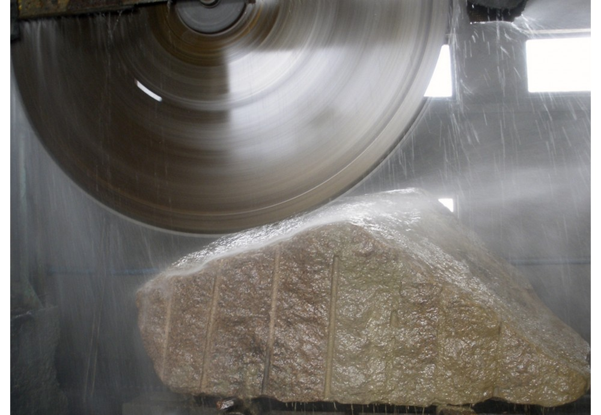

Від першого зрізу до вишуканих шедеврів

Років у справі
Каменеобробка — це не просто робота, це сімейна справа, де кожен міліметр має значення. Мій тато починав з невеликої майстерні, і за роки практика перетворилася на справжнє мистецтво.
Ми працюємо з усіма видами натурального каменю: від міцного українського граніту до витонченого італійського мармуру. Кожен камінь має свій характер, і наше завдання — підкреслити його у вашому інтер'єрі.
Об'єктів
Натуральний камінь